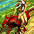
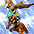

2018/11～2020/02 サマナー スキル一覧
2018/11/7 サマナースキル改変後のデータ。
2020/02/19 状態異常に伴うスキル改変前のデータ。
改変後は、2020/02/19バランスパッチ反映版を参考にしてください。
※各召喚獣は1～3段階まであり、それぞれ専用スキルを所持しています。
※最大2体まで同時に召喚可能です。
※召喚獣専用スキル使用時にCPが(カリスマ/2)以上のマイナス値になると召喚獣の段階が１段階下がります。
その際、対象召喚獣の段階が下がるだけでなくレベルが1まで巻き戻る可能性があります。
| 笛吹き | ||||||||||||||
|---|---|---|---|---|---|---|---|---|---|---|---|---|---|---|
| スキル難易度 | 1 | |||||||||||||
| 必要スキル | なし |
|||||||||||||
| スキル説明 | 特殊な音色で敵に眠り、麻痺、混乱、チャーミング等の 状態異常を引き起こす攻撃を行う。 | |||||||||||||
| レベル | 1 | 2 | 3 | 4 | 5 | 6 | 7 | 8 | 9 | 10 | 20 | 30 | 40 | 50 |
| 消費CP | 0 | |||||||||||||
| 獲得CP | 2.1 | 2.2 | 2.3 | 2.4 | 2.5 | 2.6 | 2.7 | 2.8 | 2.9 | 3 | 4 | 5 | 6 | 7 |
| ◆風ダメージ | 3.3～4.7 | 3.6～6.4 | 3.9～8.1 | 4.2～9.8 | 4.5～11.5 | 4.8～13.2 | 5.1～14.9 | 5.4～16.6 | 5.7～18.3 | 6～20 | 9～37 | 12～54 | 15～71 | 18～88 |
| 状態異常 | 眠り・麻痺・混乱が各33％の確率で発動(1.5秒) | |||||||||||||
| 突撃命令 | ||||||||||||||
|---|---|---|---|---|---|---|---|---|---|---|---|---|---|---|
| スキル難易度 | 1 | |||||||||||||
| 必要スキル | 笛吹き [3] |
|||||||||||||
| スキル説明 | 現在のペットと召喚獣に敵に向かって突進する命令を下す。 召喚獣の攻撃力が上昇する。 | |||||||||||||
| レベル | 1 | 2 | 3 | 4 | 5 | 6 | 7 | 8 | 9 | 10 | 20 | 30 | 40 | 50 |
| 消費CP | 0 | |||||||||||||
| 獲得CP | 1.2 | 1.4 | 1.6 | 1.8 | 2 | 2.2 | 2.4 | 2.6 | 2.8 | 3 | 5 | 7 | 9 | 11 |
| 召喚獣の攻撃力増加 | 3% | 6% | 9% | 12% | 15% | 18% | 21% | 24% | 27% | 30% | 60% | 90% | 120% | 150% |
| 保護命令 | ||||||||||||||
|---|---|---|---|---|---|---|---|---|---|---|---|---|---|---|
| スキル難易度 | 1 | |||||||||||||
| 必要スキル | 突撃命令 [3] |
|||||||||||||
| スキル説明 | ペットと召喚獣に身を保護しながら敵を攻撃する命令を下す。 召喚獣の防御力が上昇する。 | |||||||||||||
| レベル | 1 | 2 | 3 | 4 | 5 | 6 | 7 | 8 | 9 | 10 | 20 | 30 | 40 | 50 |
| 消費CP | 2 | 2 | 2 | 2 | 2 | 2 | 2 | 2 | 2 | 2 | 2 | 2 | 2 | 2 |
| 獲得CP | 2 | 2 | 2 | 2 | 2 | 2 | 2 | 2 | 2 | 2 | 2 | 2 | 2 | 2 |
| 召喚獣の防御力増加 | 4% | 8% | 12% | 16% | 20% | 24% | 28% | 32% | 36% | 40% | 80% | 120% | 160% | 200% |
|  | ライディングドック | |||||||||||||
|---|---|---|---|---|---|---|---|---|---|---|---|---|---|---|
| スキル難易度 | 2 | |||||||||||||
| 必要スキル | ケルビー召喚 [6] 笛吹き [6] |
|||||||||||||
| スキル説明 | ケルビーがサマナーを乗せて素早い速度で移動する。 サマナーの集中力が向上する。 | |||||||||||||
| レベル | 1 | 2 | 3 | 4 | 5 | 6 | 7 | 8 | 9 | 10 | 20 | 30 | 40 | 50 |
| 消費CP | 10.3 | 10.6 | 10.9 | 11.2 | 11.5 | 11.8 | 12.1 | 12.4 | 12.7 | 13 | 16 | 19 | 22 | 25 |
| 獲得CP | 0.5 | 1 | 1.5 | 2 | 2.5 | 3 | 3.5 | 4 | 4.5 | 5 | 10 | 15 | 20 | 25 |
| 集中力 | 16.5% | 18% | 19.5% | 21% | 22.5% | 24% | 25.5% | 27% | 28.5% | 30% | 45% | 60% | 75% | 90% |
| プレイヤーの火抵抗増加量 | 11% | 12% | 13% | 14% | 15% | 16% | 17% | 18% | 19% | 20% | 30% | 40% | 50% | 60% |
| 移動速度 | 11% | 12% | 13% | 14% | 15% | 16% | 17% | 18% | 19% | 20% | 30% | 40% | 50% | 60% |
| 持続時間(秒) | 40 | 50 | 60 | 70 | 80 | 90 | 100 | 110 | 120 | 130 | 230 | 330 | 430 | 530 |
| 備考 | スキル再使用時にケルビーから降りる。(Cキー(座る)で降りることも可能。) | |||||||||||||
| テイルスピアー | ||||||||||||||
|---|---|---|---|---|---|---|---|---|---|---|---|---|---|---|
| スキル難易度 | 3 | |||||||||||||
| 必要スキル | ケルビー召喚 [12] 突撃命令 [12] |
|||||||||||||
| スキル説明 | ケルビーの尻尾についている火の槍で敵を攻撃する。 | |||||||||||||
| レベル | 1 | 2 | 3 | 4 | 5 | 6 | 7 | 8 | 9 | 10 | 20 | 30 | 40 | 50 |
| 召喚獣の攻撃力増加 | 40% | 44% | 48% | 52% | 56% | 60% | 64% | 68% | 72% | 76% | 116% | 156% | 196% | 236% |
| ◆炎ダメージ | 14～34 | 18～38 | 22～42 | 26～46 | 30～50 | 34～54 | 38～58 | 42～62 | 46～66 | 50～70 | 90～110 | 130～150 | 170～190 | 210～230 |
| 攻撃回数(Max6) | 2 | 2 | 2 | 2 | 2 | 2 | 2 | 2 | 2 | 2 | 3 | 3 | 4 | 4 |
| 発動確率(Max70%) | 20% | 20% | 21% | 21% | 22% | 22% | 23% | 23% | 24% | 24% | 29% | 34% | 39% | 44% |
| 備考 | ケルビー召喚時に有効なパッシブスキル | |||||||||||||
| フレームリング | ||||||||||||||
|---|---|---|---|---|---|---|---|---|---|---|---|---|---|---|
| スキル難易度 | 4 | |||||||||||||
| 必要スキル | テイルスピアー [6] 保護命令 [18] |
|||||||||||||
| スキル説明 | 指定した目的地までケルビーを走らせた後、ケルビーの周囲に円形の火炎の壁を形成する。ケルビーが目的地で停止している間は、 周辺の敵に熱気でダメージを与える。 | |||||||||||||
| レベル | 1 | 2 | 3 | 4 | 5 | 6 | 7 | 8 | 9 | 10 | 20 | 30 | 40 | 50 |
| 消費CP | 42 | 44 | 46 | 48 | 50 | 52 | 54 | 56 | 58 | 60 | 80 | 100 | 120 | 140 |
| 獲得CP | 0 | |||||||||||||
| ◆炎ダメージ | 8.7～16.7 | 9.4～17.4 | 10.1～18.1 | 10.8～18.8 | 11.5～19.5 | 12.2～20.2 | 12.9～20.9 | 13.6～21.6 | 14.3～22.3 | 15～23 | 22～30 | 29～37 | 36～44 | 43～51 |
| 持続時間(秒) | 3.1 | 3.2 | 3.3 | 3.4 | 3.5 | 3.6 | 3.7 | 3.8 | 3.9 | 4 | 5 | 6 | 7 | 8 |
| 攻撃間隔 | 1回あたり0.1秒 | |||||||||||||
| 爆発半径 | ケルビーと重ならない近接の敵 | |||||||||||||
| インシナレイト | ||||||||||||||
|---|---|---|---|---|---|---|---|---|---|---|---|---|---|---|
| スキル難易度 | 5 | |||||||||||||
| 必要スキル | フレームリング [6] 保護命令 [24] |
|||||||||||||
| スキル説明 | ケルビーが高熱の火炎で取り囲まれ、 周辺に接近するすべての敵にダメージを与える。 | |||||||||||||
| レベル | 1 | 2 | 3 | 4 | 5 | 6 | 7 | 8 | 9 | 10 | 20 | 30 | 40 | 50 |
| 消費CP | 121 | 122 | 123 | 124 | 125 | 126 | 127 | 128 | 129 | 130 | 140 | 150 | 160 | 170 |
| 獲得CP | 0 | |||||||||||||
| ◆炎ダメージ | 39～89 | 43～93 | 47～97 | 51～101 | 55～105 | 59～109 | 63～113 | 67～117 | 71～121 | 75～125 | 115～165 | 155～205 | 195～245 | 235～285 |
| 爆発半径(m) | 1.01 | 1.02 | 1.03 | 1.04 | 1.05 | 1.06 | 1.07 | 1.08 | 1.09 | 1.1 | 1.2 | 1.3 | 1.4 | 1.5 |
| 備考 | 段階別ダメージ適用[60%～120%] (20%刻み) | |||||||||||||
| 備考 | アクティブ(ON/OFF)スキル | |||||||||||||
| ブロウフィッシュアイシクル | ||||||||||||||
|---|---|---|---|---|---|---|---|---|---|---|---|---|---|---|
| スキル難易度 | 1 | |||||||||||||
| 必要スキル | スウェルファー召喚 [3] |
|||||||||||||
| スキル説明 | 攻撃時、スウェルファーが召喚した氷柱が敵に落下して範囲ダメージを与える。 | |||||||||||||
| レベル | 1 | 2 | 3 | 4 | 5 | 6 | 7 | 8 | 9 | 10 | 20 | 30 | 40 | 50 |
| 水属性攻撃力 | 3.5～7.5 | 5～9 | 6.5～10.5 | 8～12 | 9.5～13.5 | 11～15 | 12.5～16.5 | 14～18 | 15.5～19.5 | 17～21 | 32～36 | 47～51 | 62～66 | 77～81 |
| 発動確率(Max70%) | 20% | 20% | 21% | 21% | 22% | 22% | 23% | 23% | 24% | 24% | 29% | 34% | 39% | 44% |
| 攻撃回数 | 3回 | |||||||||||||
| 備考 | スウェルファー召喚時に有効なパッシブスキル | |||||||||||||
| エクスパンション | ||||||||||||||
|---|---|---|---|---|---|---|---|---|---|---|---|---|---|---|
| スキル難易度 | 2 | |||||||||||||
| 必要スキル | スウェルフィッシュバブル [6] |
|||||||||||||
| スキル説明 | スウェルファーがトゲを立てて体を膨らませ、サマナーを防御する。 パーティーメンバーもトゲが立った状態になる。 | |||||||||||||
| レベル | 1 | 2 | 3 | 4 | 5 | 6 | 7 | 8 | 9 | 10 | 20 | 30 | 40 | 50 |
| 消費CP | 5.5 | 6 | 6.5 | 7 | 7.5 | 8 | 8.5 | 9 | 9.5 | 10 | 15 | 20 | 25 | 30 |
| 獲得CP | 0.2 | 0.4 | 0.6 | 0.8 | 1 | 1.2 | 1.4 | 1.6 | 1.8 | 2 | 4 | 6 | 8 | 10 |
| 召喚獣防御力増加(+) | 3 | 4 | 5 | 6 | 7 | 8 | 9 | 10 | 11 | 12 | 22 | 32 | 42 | 52 |
| 召喚獣防御力増加(％) | 1.5% | 3% | 4.5% | 6% | 7.5% | 9% | 10.5% | 12% | 13.5% | 15% | 30% | 45% | 60% | 75% |
| ダメージ反射量 | 7% | 9% | 11% | 13% | 15% | 17% | 19% | 21% | 23% | 25% | 45% | 65% | 85% | 105% |
| 備考 | 敵の防御力によっては低ダメージが出ることもあります。 | |||||||||||||
| 備考 | アクティブ(ON/OFF)スキル | |||||||||||||
| バブルガムエクスプロージョン | ||||||||||||||
|---|---|---|---|---|---|---|---|---|---|---|---|---|---|---|
| スキル難易度 | 4 | |||||||||||||
| 必要スキル | エクスパンション [12] スウェルフィッシュバブル [18]
|
|||||||||||||
| スキル説明 | スウェルファーが作り出した爆発する泡を空中から落下させる。 炸裂した水球は広範囲の敵にダメージを与える。 | |||||||||||||
| レベル | 1 | 2 | 3 | 4 | 5 | 6 | 7 | 8 | 9 | 10 | 20 | 30 | 40 | 50 |
| 消費CP | 50.5 | 51 | 51.5 | 52 | 52.5 | 53 | 53.5 | 54 | 54.5 | 55 | 60 | 65 | 70 | 75 |
| 獲得CP | 0 | |||||||||||||
| 水属性攻撃力 | 11～31 | 15～35 | 19～39 | 23～43 | 27～47 | 31～51 | 35～55 | 39～59 | 43～63 | 47～67 | 87～107 | 127～147 | 167～187 | 207～227 |
| 備考1 | 段階別ダメージ適用[90%～130%] (20%刻み) | |||||||||||||
| 備考2 | 一定確率でフリーズ効果発動 | |||||||||||||
| アクアバンブー | ||||||||||||||
|---|---|---|---|---|---|---|---|---|---|---|---|---|---|---|
| スキル難易度 | 5 | |||||||||||||
| 必要スキル | スウェルファー召喚 [24] 笛吹き [24]
|
|||||||||||||
| スキル説明 | 地下水脈を引いて一定地域に筍を召喚する。 その中の敵に持続的にダメージを与え、 領域内の味方のクリティカルヒット確率を上昇する。 | |||||||||||||
| レベル | 1 | 2 | 3 | 4 | 5 | 6 | 7 | 8 | 9 | 10 | 20 | 30 | 40 | 50 |
| 消費CP | 104 | 108 | 112 | 116 | 120 | 124 | 128 | 132 | 136 | 140 | 180 | 220 | 260 | 300 |
| 獲得CP | 0 | |||||||||||||
| 水属性攻撃力 | 9~23 | 10~24 | 11~25 | 12~26 | 13~27 | 14~28 | 15~29 | 16~30 | 17~31 | 18~32 | 28~42 | 38~52 | 48~62 | 58~72 |
| クリティカル確率 | 21% | 22% | 23% | 24% | 25% | 26% | 27% | 28% | 29% | 30% | 40% | 50% | 60% | 70% |
| 持続時間(秒) | 30秒 | |||||||||||||
| 攻撃時間 | 1回あたり3秒 | |||||||||||||
| 爆発半径(m) | 2.5 | 2.5 | 2.5 | 2.5 | 2.5 | 2.5 | 2.5 | 2.5 | 2.5 | 2.5 | 2.5 | 2.5 | 2.5 | 2.5 |
| 備考１ | モンスターの抵抗により、クリティカル確率が数値より低くなることがある。 | |||||||||||||
| 備考２ | 段階別ダメージ適用[75%～120%] (15%刻み) | |||||||||||||
| 備考3 | クリティカル確率の上限：70% | |||||||||||||
| ワインディングクロー | ||||||||||||||
|---|---|---|---|---|---|---|---|---|---|---|---|---|---|---|
| スキル難易度 | 1 | |||||||||||||
| 必要スキル | ウィンディ召喚 [3] 突撃命令 [3]
|
|||||||||||||
| スキル説明 | ウィンディの鉤爪で敵を攻撃する。 | |||||||||||||
| レベル | 1 | 2 | 3 | 4 | 5 | 6 | 7 | 8 | 9 | 10 | 20 | 30 | 40 | 50 |
| ◆風ダメージ | 13.5～33.5 | 17～37 | 20.5～40.5 | 24～44 | 27.5～47.5 | 31～51 | 34.5～54.5 | 38～58 | 41.5～61.5 | 45～65 | 80～100 | 115～135 | 150～170 | 185～205 |
| ◆物理ダメージ | 40% | 44% | 48% | 52% | 56% | 60% | 64% | 68% | 72% | 76% | 116% | 156% | 196% | 236% |
| 攻撃回数(Max7) | 3 | 3 | 3 | 3 | 3 | 3 | 3 | 3 | 4 | 4 | 4 | 5 | 5 | 6 |
| 発動確率(Max70%) | 20% | 20% | 21% | 21% | 22% | 22% | 23% | 23% | 24% | 24% | 29% | 34% | 39% | 44% |
| 命中率増加 | 0.1% | 0.2% | 0.3% | 0.4% | 0.5% | 0.6% | 0.7% | 0.8% | 0.9% | 1% | 2% | 3% | 4% | 5% |
| 備考 | ウィンディ召喚時に有効なパッシブスキル | |||||||||||||
|  | リフトアップ | |||||||||||||
|---|---|---|---|---|---|---|---|---|---|---|---|---|---|---|
| スキル難易度 | 3 | |||||||||||||
| 必要スキル | ワインディングクロー [12] |
|||||||||||||
| スキル説明 | 敵の周囲に突風を巻き起こして、空中に飛ばして落とす。 敵の体重が重ければ重いほど大きなダメージを与えるが、着地技術がある敵には 効果が薄く、高レベルの敵は持ち上げることすら出来ない。 | |||||||||||||
| レベル | 1 | 2 | 3 | 4 | 5 | 6 | 7 | 8 | 9 | 10 | 20 | 30 | 40 | 50 |
| 消費CP | 22 | 24 | 26 | 28 | 30 | 32 | 34 | 36 | 38 | 40 | 60 | 80 | 100 | 120 |
| 獲得CP | 0.5 | 1 | 1.5 | 2 | 2.5 | 3 | 3.5 | 4 | 4.5 | 5 | 10 | 15 | 20 | 25 |
| 残りHPに応じた割合ダメージ(物理) | 5.1% | 5.2% | 5.3% | 5.4% | 5.5% | 5.6% | 5.7% | 5.8% | 5.9% | 6% | 7% | 8% | 9% | 10% |
| 限界レベル(キャラクターレベルと比較) | -24 | -23 | -22 | -21 | -20 | -19 | -18 | -17 | -16 | -15 | -5 | 5 | 15 | 25 |
| 備考 | 敵の呪い抵抗が高い(Zin系、ボス系)相手にはNo Damgeと出ます。 ゲーム表記上の物理ダメージは無視されます。 |
|||||||||||||
| ゲイルパンチ | ||||||||||||||
|---|---|---|---|---|---|---|---|---|---|---|---|---|---|---|
| スキル難易度 | 4 | |||||||||||||
| 必要スキル | ワインディングクロー [18] 突撃命令 [18] |
|||||||||||||
| スキル説明 | 敵に風を圧縮したロケットパンチを放つ。 命中するとその周囲に竜巻が生じて、周囲の敵も打撃を受ける。 | |||||||||||||
| レベル | 1 | 2 | 3 | 4 | 5 | 6 | 7 | 8 | 9 | 10 | 20 | 30 | 40 | 50 |
| 消費CP | 63.5 | 67 | 70.5 | 74 | 77.5 | 81 | 84.5 | 88 | 91.5 | 95 | 130 | 165 | 200 | 235 |
| 獲得CP | 3 | 6 | 9 | 12 | 15 | 18 | 21 | 24 | 27 | 30 | 60 | 90 | 120 | 150 |
| 風属性攻撃力(ターゲット) | 32～46 | 34～52 | 36～58 | 38～64 | 40～70 | 42～76 | 44～82 | 46～88 | 48～94 | 50～100 | 70～160 | 90～220 | 110～280 | 130～340 |
| 風属性攻撃力(周囲のmob) | 1～11 | 2～12 | 3～13 | 4～14 | 5～15 | 6～16 | 7～17 | 8～18 | 9～19 | 10～20 | 20～30 | 30～40 | 40～50 | 50～60 |
| 麻痺時間(秒) | 1.1 | 1.2 | 1.3 | 1.4 | 1.5 | 1.6 | 1.7 | 1.8 | 1.9 | 2 | 3 | 4 | 5 | 6 |
| 爆発半径(m) | 1.51 | 1.52 | 1.53 | 1.54 | 1.55 | 1.56 | 1.57 | 1.58 | 1.59 | 1.6 | 1.7 | 1.8 | 1.9 | 2 |
| バキュームポイント | ||||||||||||||
|---|---|---|---|---|---|---|---|---|---|---|---|---|---|---|
| スキル難易度 | 5 | |||||||||||||
| 必要スキル | リフトアップ[12] 召喚獣パワーアップ [12] |
|||||||||||||
| スキル説明 | 特定の場所に固定させた真空のホールを生成する。 ホールの影響圏内にいる敵はホールの影響でウィンディを攻撃しにくくなり、 持続的に若干のダメージを与える。 | |||||||||||||
| レベル | 1 | 2 | 3 | 4 | 5 | 6 | 7 | 8 | 9 | 10 | 20 | 30 | 40 | 50 |
| 消費CP | 105 | 110 | 115 | 120 | 125 | 130 | 135 | 140 | 145 | 150 | 200 | 250 | 300 | 350 |
| 獲得CP | 0 | |||||||||||||
| ◆風ダメージ | 6～86 | 7～87 | 8～88 | 9～89 | 10～90 | 11～91 | 12～92 | 13～93 | 14～94 | 15～95 | 25～105 | 35～115 | 45～125 | 55～135 |
| 防御力(＋) | 1 | 2 | 3 | 4 | 5 | 6 | 7 | 8 | 9 | 10 | 20 | 30 | 40 | 50 |
| 回避率増加量(%) | 0.5% | 1% | 1.5% | 2% | 2.5% | 3% | 3.5% | 4% | 4.5% | 5% | 10% | 15% | 20% | 25% |
| 全属性抵抗力 | 1% | 2% | 3% | 4% | 5% | 6% | 7% | 8% | 9% | 10% | 20% | 30% | 40% | 50% |
| 持続時間 | 6秒 | 6秒 | 7秒 | 7秒 | 8秒 | 8秒 | 9秒 | 9秒 | 10秒 | 10秒 | 15秒 | 20秒 | 25秒 | 30秒 |
| 爆発範囲(m) | 1.5 | 1.5 | 1.5 | 1.5 | 1.5 | 1.5 | 1.5 | 1.5 | 1.5 | 1.5 | 1.5 | 1.5 | 1.5 | 1.5 |
| 敵の移動速度低下量 | 10.3% | 10.6% | 10.9% | 11.2% | 11.5% | 11.8% | 12.1% | 12.4% | 12.7% | 13% | 16% | 19% | 22% | 25% |
| 攻撃間隔 | 1回あたり1秒 | |||||||||||||
| 備考 | 段階別ダメージ適用[75%～150%] (25%刻み) | |||||||||||||
| アーストラーマー | ||||||||||||||
|---|---|---|---|---|---|---|---|---|---|---|---|---|---|---|
| スキル難易度 | 2 | |||||||||||||
| 必要スキル | ヘッジャー召喚 [6] |
|||||||||||||
| スキル説明 | 攻撃時に、ヘッジャーの足踏みで発生した地震により敵に追加ダメージを与える。攻撃を受けた敵は震動に耐えるため一定の確率で硬直する。 | |||||||||||||
| レベル | 1 | 2 | 3 | 4 | 5 | 6 | 7 | 8 | 9 | 10 | 20 | 30 | 40 | 50 |
| 地属性攻撃力 | 22.5～23.5 | 25～26 | 27.5～28.5 | 30～31 | 32.5～33.5 | 35～36 | 37.5～38.5 | 40～41 | 42.5～43.5 | 45～46 | 70～71 | 95～96 | 120～121 | 145～146 |
| 発動確率(Max70%) | 20% | 20% | 21% | 21% | 22% | 22% | 23% | 23% | 24% | 24% | 29% | 34% | 39% | 44% |
| 攻撃回数 | 3回 | |||||||||||||
| 備考 | ヘッジャー召喚時に有効なパッシブスキル、範囲攻撃 | |||||||||||||
| ヘッジャーヘッジング | ||||||||||||||
|---|---|---|---|---|---|---|---|---|---|---|---|---|---|---|
| スキル難易度 | 2 | |||||||||||||
| 必要スキル | アーストラーマー [3] |
|||||||||||||
| スキル説明 | ヘッジャーが指定した地形の土を掘って、移動を防ぐ障害物を形成する。 | |||||||||||||
| レベル | 1 | 2 | 3 | 4 | 5 | 6 | 7 | 8 | 9 | 10 | 20 | 30 | 40 | 50 |
| 消費CP | 10.5 | 11 | 11.5 | 12 | 12.5 | 13 | 13.5 | 14 | 14.5 | 15 | 20 | 25 | 30 | 35 |
| 獲得CP | 1 | 2 | 3 | 4 | 5 | 6 | 7 | 8 | 9 | 10 | 20 | 30 | 40 | 50 |
| 地属性攻撃力 | 5.7 | 6.4 | 7.1 | 7.8 | 8.5 | 9.2 | 9.9 | 10.6 | 11.3 | 12 | 19 | 26 | 33 | 40 |
| 移動不可能時間 | 3 | 4 | 5 | 6 | 7 | 8 | 9 | 10 | 11 | 12 | 22 | 32 | 42 | 52 |
| アルマジロローリング | ||||||||||||||
|---|---|---|---|---|---|---|---|---|---|---|---|---|---|---|
| スキル難易度 | 4 | |||||||||||||
| 必要スキル | ヘッジャー召喚 [18] 突撃命令 [18] |
|||||||||||||
| スキル説明 | アルマジロのように体を丸くしたヘッジャーが命令場所まで回転しながら突進する。周辺に持続的ダメージを与える。 | |||||||||||||
| レベル | 1 | 2 | 3 | 4 | 5 | 6 | 7 | 8 | 9 | 10 | 20 | 30 | 40 | 50 |
| 消費CP | 52.5 | 55 | 57.5 | 60 | 62.5 | 65 | 67.5 | 70 | 72.5 | 75 | 100 | 125 | 150 | 175 |
| 獲得CP | 2 | 4 | 6 | 8 | 10 | 12 | 14 | 16 | 18 | 20 | 40 | 60 | 80 | 100 |
| ◆物理ダメージ | 70.2% | 75.4% | 80.6% | 85.8% | 91% | 96.2% | 101.4% | 106.6% | 111.8% | 117% | 169% | 221% | 273% | 325% |
| 地属性の攻撃力 | 40~70 | 50~80 | 60~90 | 70~100 | 80~110 | 90~120 | 100~130 | 110~140 | 120~150 | 130~160 | 230~260 | 330~360 | 430~460 | 530~560 |
| ノックバック距離(m) | 1.3 | 1.3 | 1.3 | 1.3 | 1.3 | 1.3 | 1.3 | 1.3 | 1.3 | 1.3 | 1.3 | 1.3 | 1.3 | 1.3 |
| 攻撃サイクル | 1回あたり0.4秒 | |||||||||||||
| クールタイム | 4秒 | |||||||||||||
| リフレクションスキン | ||||||||||||||
|---|---|---|---|---|---|---|---|---|---|---|---|---|---|---|
| スキル難易度 | 5 | |||||||||||||
| 必要スキル | アルマジロローリング [6] 召喚獣ダブルパワーアップ [6] |
|||||||||||||
| スキル説明 | ヘッジャーの肌に魔法反射の呪文を付与し、 どのような魔法でも術者に反射する。 モグラはサマナーの周囲で、サマナーの代わりに魔法を受ける。 | |||||||||||||
| レベル | 1 | 2 | 3 | 4 | 5 | 6 | 7 | 8 | 9 | 10 | 20 | 30 | 40 | 50 |
| 消費CP | 121 | 122 | 123 | 124 | 125 | 126 | 127 | 128 | 129 | 130 | 140 | 150 | 160 | 170 |
| 獲得CP | 1.5 | 3 | 4.5 | 6 | 7.5 | 9 | 10.5 | 12 | 13.5 | 15 | 30 | 45 | 60 | 75 |
| 反射確率 | 40.8% | 41.6% | 42.4% | 43.2% | 44% | 44.8% | 45.6% | 46.4% | 47.2% | 48% | 56% | 64% | 72% | 80% |
| 召喚獣の全属性抵抗上昇量(Max50%) | 36% | 37% | 38% | 39% | 40% | 41% | 42% | 43% | 44% | 45% | 50% | 50% | 50% | 50% |
| 抵抗上昇の持続時間 | 1秒 | |||||||||||||
| 備考 | アクティブ(ON/OFF)スキル | |||||||||||||
| ケルビー召喚 | ||||||||||||||
|---|---|---|---|---|---|---|---|---|---|---|---|---|---|---|
| スキル難易度 | 1 | |||||||||||||
| 必要スキル | 笛吹き [1] |
|||||||||||||
| スキル説明 | 召喚獣である火犬「ケルビー」を召喚する。1段階状態で召喚する。 繰り返して使用すると充填効果もある。 | |||||||||||||
| レベル | 1 | 2 | 3 | 4 | 5 | 6 | 7 | 8 | 9 | 10 | 20 | 30 | 40 | 50 |
| 消費CP | 0.3 | 0.6 | 0.9 | 1.2 | 1.5 | 1.8 | 2.1 | 2.4 | 2.7 | 3 | 6 | 9 | 12 | 15 |
| 獲得CP | 1.5 | 3 | 4.5 | 6 | 7.5 | 9 | 10.5 | 12 | 13.5 | 15 | 30 | 45 | 60 | 75 |
| キャスティング速度(秒) | 1.24 | 1.24 | 1.23 | 1.23 | 1.22 | 1.21 | 1.21 | 1.2 | 1.19 | 1.19 | 1.13 | 1.06 | 1 | 0.94 |
| 召喚獣のレベル(本体レベル * X%) | 92.5% | 93% | 93.5% | 94% | 94.5% | 95% | 95.5% | 96% | 96.5% | 97% | 102% | 107% | 112% | 117% |
| スウェルファー召喚 | ||||||||||||||
|---|---|---|---|---|---|---|---|---|---|---|---|---|---|---|
| スキル難易度 | 2 | |||||||||||||
| 必要スキル | ウィンディ召喚 [3] 突撃命令 [6] |
|||||||||||||
| スキル説明 | 召喚獣である水フグ「スウェルファー」を召喚する。 1段階状態で召喚する。繰り返して使用すると充填効果もある。 | |||||||||||||
| レベル | 1 | 2 | 3 | 4 | 5 | 6 | 7 | 8 | 9 | 10 | 20 | 30 | 40 | 50 |
| 消費CP | 10.2 | 10.4 | 10.6 | 10.8 | 11 | 11.2 | 11.4 | 11.6 | 11.8 | 12 | 14 | 16 | 18 | 20 |
| 獲得CP | 2 | 4 | 6 | 8 | 10 | 12 | 14 | 16 | 18 | 20 | 40 | 60 | 80 | 100 |
| キャスティング速度(秒) | 1.24 | 1.24 | 1.23 | 1.23 | 1.22 | 1.21 | 1.21 | 1.2 | 1.19 | 1.19 | 1.13 | 1.06 | 1 | 0.94 |
| 召喚獣のレベル(本体レベル * X%) | 95.5% | 96% | 96.5% | 97% | 97.5% | 98% | 98.5% | 99% | 99.5% | 100% | 105% | 110% | 115% | 120% |
| ウィンディ召喚 | ||||||||||||||
|---|---|---|---|---|---|---|---|---|---|---|---|---|---|---|
| スキル難易度 | 1 | |||||||||||||
| 必要スキル | 笛吹き [3] 保護命令 [3] |
|||||||||||||
| スキル説明 | 召喚獣である風鳥「ウィンディ」を召喚する。1段階状態で召喚する。 繰り返して使用すると充填効果もある。 | |||||||||||||
| レベル | 1 | 2 | 3 | 4 | 5 | 6 | 7 | 8 | 9 | 10 | 20 | 30 | 40 | 50 |
| 消費CP | 0 | |||||||||||||
| 獲得CP | 5.8 | 6.6 | 7.4 | 8.2 | 9 | 9.8 | 10.6 | 11.4 | 12.2 | 13 | 21 | 29 | 37 | 45 |
| キャスティング速度(秒) | 1.24 | 1.24 | 1.23 | 1.23 | 1.22 | 1.21 | 1.21 | 1.2 | 1.19 | 1.19 | 1.13 | 1.06 | 1 | 0.94 |
| 召喚獣のレベル(本体レベル * X%) | 92.5% | 93% | 93.5% | 94% | 94.5% | 95% | 95.5% | 96% | 96.5% | 97% | 102% | 107% | 112% | 117% |
| ヘッジャー召喚 | ||||||||||||||
|---|---|---|---|---|---|---|---|---|---|---|---|---|---|---|
| スキル難易度 | 2 | |||||||||||||
| 必要スキル | ケルビー召喚 [6] 突撃命令 [6] 保護命令 [6] スウェルファー召喚 [3] |
|||||||||||||
| スキル説明 | 召喚獣である地モグラ「ヘッジャー」を召喚する。1段階状態で召喚する。 繰り返して使用すると充填効果もある。 | |||||||||||||
| レベル | 1 | 2 | 3 | 4 | 5 | 6 | 7 | 8 | 9 | 10 | 20 | 30 | 40 | 50 |
| 消費CP | 15 | 15 | 15 | 15 | 15 | 15 | 15 | 15 | 15 | 15 | 15 | 15 | 15 | 15 |
| 獲得CP | 2.5 | 5 | 7.5 | 10 | 12.5 | 15 | 17.5 | 20 | 22.5 | 25 | 50 | 75 | 100 | 125 |
| キャスティング速度(秒) | 1.24 | 1.24 | 1.23 | 1.23 | 1.22 | 1.21 | 1.21 | 1.2 | 1.19 | 1.19 | 1.13 | 1.06 | 1 | 0.94 |
| 召喚獣のレベル(本体レベル * X%) | 95.5% | 96% | 96.5% | 97% | 97.5% | 98% | 98.5% | 99% | 99.5% | 100% | 105% | 110% | 115% | 120% |
| 召喚獣パワーアップ | ||||||||||||||
|---|---|---|---|---|---|---|---|---|---|---|---|---|---|---|
| スキル難易度 | 3 | |||||||||||||
| 必要スキル | : 突撃命令 [12] ケルビー召喚 [12] ウィンディ召喚[12] スウェルファー召喚 [6] |
|||||||||||||
| スキル説明 | 指定した1段階の召喚獣を2段階にパワーアップと同時に充填を行う。 2段階にならないと3,4レベルの技術は使用できない。 | |||||||||||||
| レベル | 1 | 2 | 3 | 4 | 5 | 6 | 7 | 8 | 9 | 10 | 20 | 30 | 40 | 50 |
| 消費CP | 30 | 30 | 30 | 30 | 30 | 30 | 30 | 30 | 30 | 30 | 30 | 30 | 30 | 30 |
| 獲得CP | 15 | 18 | 21 | 24 | 27 | 30 | 33 | 36 | 39 | 42 | 72 | 102 | 132 | 162 |
| キャスティング速度(秒) | 1.87 | 1.86 | 1.85 | 1.84 | 1.83 | 1.82 | 1.81 | 1.8 | 1.79 | 1.78 | 1.69 | 1.59 | 1.5 | 1.41 |
| 2段階召喚獣Lv(本体レベル * X%) | 100.8% | 101.6% | 102.4% | 103.2% | 104% | 104.8% | 105.6% | 106.4% | 107.2% | 108% | 116% | 124% | 132% | 140% |
| 3段階召喚獣Lv(本体レベル * X%) | 106% | 107% | 108% | 109% | 110% | 111% | 112% | 113% | 114% | 115% | 125% | 135% | 145% | 155% |
| 召喚獣ダブルパワーアップ | ||||||||||||||
|---|---|---|---|---|---|---|---|---|---|---|---|---|---|---|
| スキル難易度 | 4 | |||||||||||||
| 必要スキル | 保護命令 [18] スウェルファー召喚[12] ヘッジャー召喚 [12] 召喚獣パワーアップ [6] |
|||||||||||||
| スキル説明 | 自分の周りの召喚獣をパワーアップさせて、 レベル・魔法攻撃力・体力・魔法抵抗率を上昇させる。 | |||||||||||||
| レベル | 1 | 2 | 3 | 4 | 5 | 6 | 7 | 8 | 9 | 10 | 20 | 30 | 40 | 50 |
| 必要CP | 60 | 60 | 60 | 60 | 60 | 60 | 60 | 60 | 60 | 60 | 60 | 60 | 60 | 60 |
| 火・水・風・土属性攻撃力 | 11.3% | 12.6% | 13.9% | 15.2% | 16.5% | 17.8% | 19.1% | 20.4% | 21.7% | 23% | 36% | 49% | 62% | 75% |
| 攻撃速度増加 | 5.7% | 6.4% | 7.1% | 7.8% | 8.5% | 9.2% | 9.9% | 10.6% | 11.3% | 12% | 19% | 26% | 33% | 40% |
| 移動速度増加 | 5.7% | 6.4% | 7.1% | 7.8% | 8.5% | 9.2% | 9.9% | 10.6% | 11.3% | 12% | 19% | 26% | 33% | 40% |
| 全属性抵抗増加(Max50%) | 5.5% | 6% | 6.5% | 7% | 7.5% | 8% | 8.5% | 9% | 9.5% | 10% | 15% | 20% | 25% | 30% |
| 状態異常抵抗増加(Max30%) | 4% | 4.3% | 4.6% | 4.9% | 5.2% | 5.5% | 5.8% | 6.1% | 6.4% | 6.7% | 9.7% | 12.7% | 15.7% | 18.7% |
| 備考 | アクティブ(ON/OFF)スキル | |||||||||||||
[参考]公式サイト